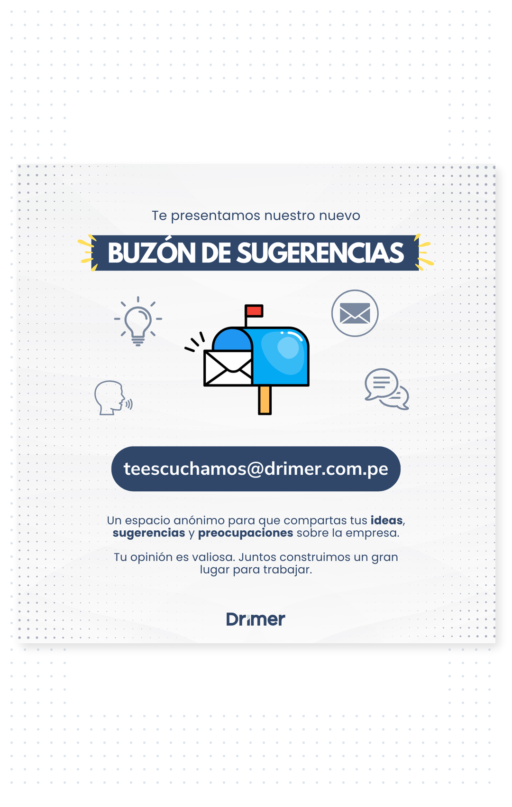

HABLEMOS
LO QUE NECESITE ATENCIÓN, COMUNÍCALO
En el trabajo pueden surgir situaciones que necesitan ser conocidas, atendidas o mejoradas.
Una situación te preocupa
Algo que ocurre en el trabajo te genera incomodidad, preocupación o consideras que debería revisarse.
Algo no está funcionando bien
Detectas un problema, una práctica inadecuada o una posible irregularidad que debería ser atendida.
Ves una oportunidad de mejora
Identificas una forma más práctica, segura o efectiva de hacer algo y quieres proponerla.
TRES VÍAS PARA COMUNICAR
Ante una situación que necesitas comunicar, puedes utilizar cualquiera de estas vías.
Jefe inmediato
Comunica directamente la situación identificada.
Recursos Humanos
Acude directamente al área y explica lo ocurrido.
Te Escuchamos
Si deseas realizar un reporte anónimo: tescuchamos@drimer.com.pe
No necesitas buscar "el canal perfecto". Lo importante es que la situación llegue a Drimer.
¿QUÉ PASA DESPUÉS?
Comunicar una situación activa un proceso de revisión y atención.
Se recibe
La comunicación es recibida y revisada.
Se deriva
Se identifica a quién corresponde atender la situación.
Se evalúa
Se revisa el caso y se define la respuesta o acción que corresponda.
Se comunica
El resultado es comunicado cuando corresponde.
Gestión Humana coordina este proceso con las áreas involucradas.
QUÉ GARANTIZA DRIMER
Una comunicación debe ser tratada de manera segura, respetuosa y transparente.
Confidencialidad
La información se trata de manera confidencial.
Seguridad y respeto
Quien comunica una situación debe recibir un trato seguro y respetuoso.
Transparencia
La situación debe gestionarse de manera clara y transparente.
Sin represalias
Drimer garantiza que no habrá represalias contra quien realice una comunicación de buena fe.
¿Qué harías?
Jefe inmediato | Recursos Humanos | Te Escuchamos para reporte anónimo
SI NO TE PASÓ A TI, TAMBIÉN ACTÚA
No ignores
Que no seas la persona directamente afectada no significa que una posible irregularidad deba quedar sin comunicar.
No encubras
No ocultes ni ayudes a mantener una posible irregularidad fuera del conocimiento de Drimer.
Comunica
Transmite los hechos que realmente conoces mediante una de las tres vías oficiales.
No necesitas investigar ni demostrar lo ocurrido. Tu responsabilidad es comunicar lo que conoces.
COMUNICAR TAMBIÉN SIRVE PARA MEJORAR
No todo lo que comunicas tiene que ser una irregularidad. También puedes compartir ideas, recomendaciones o situaciones que podrían hacerse mejor.

QUÉDATE CON ESTO
Identifica
¿Algo necesita atención o puede mejorar?
Comunica
Jefe inmediato, Recursos Humanos, Te Escuchamos.
Confía
Confidencialidad, respeto, transparencia y sin represalias.
Actúa
Si conoces una posible irregularidad, no la ignores ni la encubras.
RUTA DRIMER ÍNTEGRO
YA SABES CÓMO ACTUAR
Si algo te preocupa, necesita atención o puede mejorar, comunícalo.
Jefe inmediato | Recursos Humanos | Te Escuchamos para reporte anónimo
Tu comunicación también ayuda a construir un mejor lugar para trabajar.